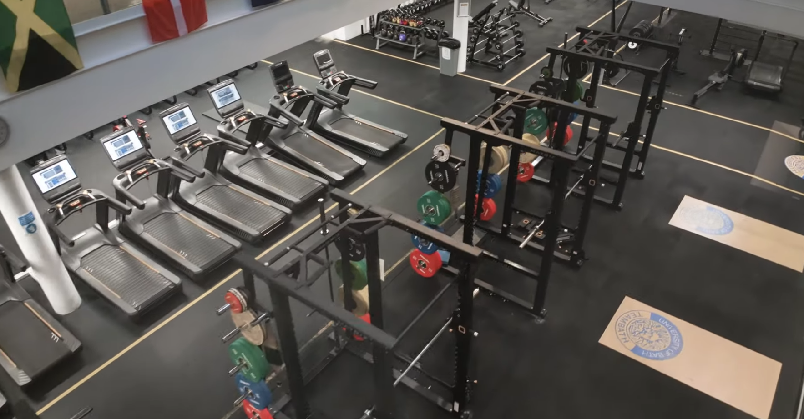

GALLERY
Founded in 2012, our Cityside (Yorkgate) location is a state-of-the-art fitness facility that embodies our commitment to providing an exceptional training environment for our members.
From the moment you step through our doors, you'll be greeted by a vibrant and energetic atmosphere
that inspires you to push your limits and achieve your fitness goals.
Cityside (Yorkgate) gym is equipped with a wide range of cutting-edge fitness
equipment, including free weights, resistance machines, cardio equipment, and functional training areas.
Whether you're a seasoned athlete or just starting your fitness journey, you'll find everything you need to
challenge yourself and make progress. Our facility is designed to accommodate a variety of training styles
and preferences, ensuring that every member can find their own path to success.
Beyond the equipment, our Cityside (Yorkgate) location is staffed by a team of passionate and knowledgeable fitness professionals who are dedicated to helping you succeed.
Whether you need guidance on proper form, personalized workout plans, or motivation to stay on track
our team is here to support you every step of the way.


The Yorkgate location also offers a variety of group fitness classes, including yoga, spinning, HIIT, and more.
These classes are designed to provide a fun and engaging workout experience while fostering a sense of community
among our members. Whether you're looking to improve your flexibility, build strength, or boost your cardiovascular fitness, our group classes offer something for everyone.
At Cityside (Yorkgate), we believe that fitness is not just about physical health, but also about mental well-being and social connection.
That's why we've created a welcoming and inclusive environment where members can connect with like-minded individuals,
share their fitness journeys, and support each other in achieving their goals. Our community is at the heart of everything we do, and we strive to create a space where everyone feels valued and empowered.
In summary, our Cityside (Yorkgate) location is more than just a gym - it's a vibrant fitness community that offers top-notch facilities, expert guidance, and a supportive environment to help you achieve your fitness aspirations.
Whether you're looking to get in shape, improve your health, or simply have fun while working out, Cityside (Yorkgate) is the place to be.